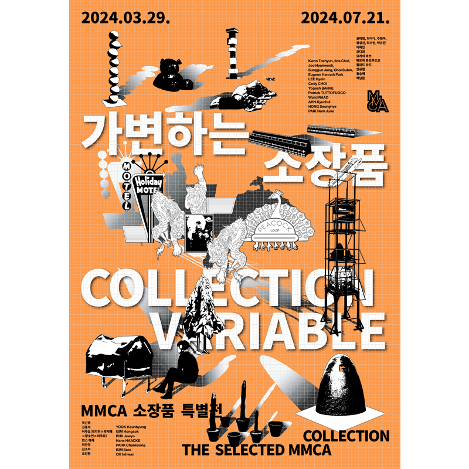
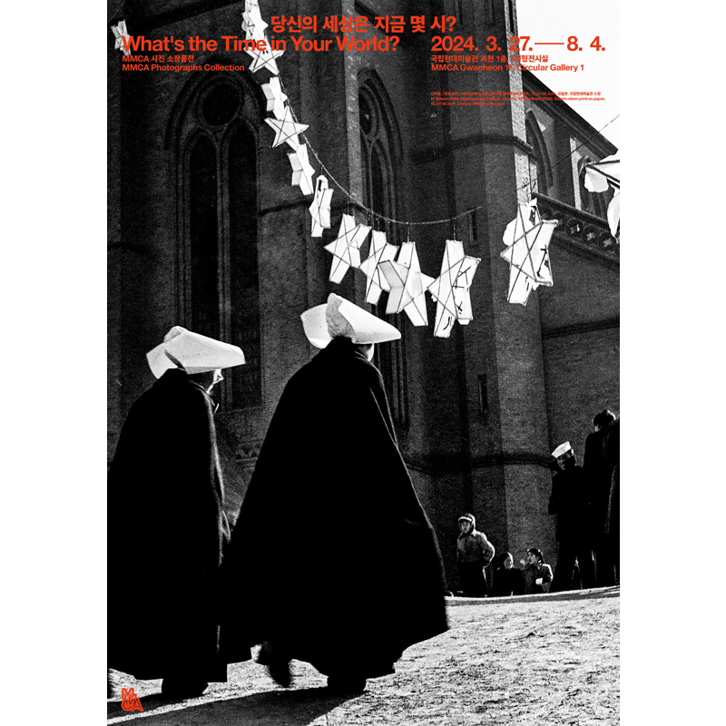

가변하는 소장품

MMCA 소장품 특별전 «가변하는 소장품»은 국립현대미술관의 소장품 가운데 무형의 상태와 비물질로 이루어져 다양한 조건과 가변적 특징을 보여주는 동시대 작품을 소개하는 전시이다.
2024-03-29~2024-07-21
MMCA 사진소장품전:당신의 세상은 지금 몇 시?

이번 전시 제목에 참고한 영화 *「당신의 세상은 지금 몇 시?」*는 떠난 지 20년이 넘은 고향으로부터 온 사진 한 장으로부터 시작한다. 영화에서 사진이 과거의 구체적인 어떤 시간으로 주인공을 소환한 것처럼, 미술관 수장고에 보관되어 있다가 나온 사진이 관객들을 어떤 풍경과 시간 속으로 데려다주기를 바라는 마음에서 이 전시가 시작됐다.
2024-03-27~2024-08-04